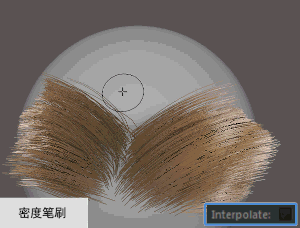

- 绘制操作(Paint Operation)
- 特定于“密度”(Density)笔刷。在网格曲面上拖动时更新笔刷半径中头发的密度。笔刷笔划应用的实际密度值基于“绘制操作”(Paint Operation)与“值”(Value)设置的组合。
在典型工作流中，使用“值”(Value)属性设置要实现的最大值，然后调整“强度”(Strength)以增强或减弱“绘制操作”(Paint Operation)的效果。
热键：按 Ctrl 键在“增加”(Increase)和“减少”(Decrease)之间切换。 按 N 键在“绘制操作”(Paint Operation)设置之间进行切换。
- 设定(Set)
- 将笔刷半径中头发的密度设置为设定“值”(Value)。通过将“值”(Value)设置为 0，可以移除头发。
- 增加(Increase)
-
按设定“值”(Value)增加笔刷半径中头发的密度。
- 减少(Decrease)
- 按设定“值”(Value)减少笔刷半径中头发的密度。
- 平滑(Smooth)
- 通过计算笔刷半径中头发的平均密度值，融合不同的密度值。
- 值(Value)
- 特定于“密度”(Density)笔刷。该笔刷根据设置的“绘制操作”(Paint Operation)应用此值。“值”(Value)设置在应用于头发之前先乘以“强度”(Strength)值。
- 最大密度(Max Density)
- 特定于“密度”(Density)笔刷。当“绘制操作”(Paint Operation)设置为“增加”(Increase)时，逐面钳制头发数。
- 移除(Remove)
- 特定于“放置”(Place)笔刷。启用后，通过单击以前放置的头发，可以将其移除。该笔刷将移除其半径内放置的所有头发。默认情况下，此选项处于禁用状态。
热键：按 Ctrl 键在“添加”(Add)和“移除”(Remove)之间切换。
提示： 可以指定颜色显示通过“放置”(Place)笔刷添加的头发，使其与通过其他方法（例如，“密度”(Density)笔刷）添加的头发区分开来。为此，请在 descriptionShape 节点属性的“预览设置”(Preview Settings)区域中启用“亮显放置的头发”(Highlight Placed Hairs)。请参见 XGen 交互式修饰描述节点属性。 - 清除全部(Clear All)
- 特定于“放置”(Place)笔刷。移除该笔刷放置在曲面上的所有头发。
- 插值(Interpolate)
- 启用后，新头发与周围头发的长度和形状匹配。禁用后，新头发使用“初始长度”(Initial Length)值且未定义形状（跟随曲面法线）。用 1.0 乘以描述节点的“宽度比例”(Width Scale)值，即可得出新头发的宽度。默认情况下，“插值”(Interpolate)处于禁用状态。
将“绘制操作”(Paint Operation)设置为“减少”(Decrease)时，此选项不可用。
- 插值自(Interpolate From)
- 用于指定塑造新头发形状的源。
- 当前描述(Current Description)
- 根据“密度”(Density)笔刷当前正在修改的描述对头发的形状、长度和宽度进行插值。
- 插值源(Interpolation Source)
- 根据场景中的其他描述对头发的形状、长度和宽度进行插值。
为此，请在“节点编辑器”(Node Editor)中，将源 descriptionShape 节点的“输出样条线数据”(Output Spline Data)端口连接到目标 description_base 节点的“插值源”(Interp Source)端口。
- 初始长度(Initial Length)
- 设置在绘制密度或放置单根头发时添加到网格的头发的长度。当“插值”(Interpolate)启用时，这些设置不起作用。
- 平滑度(Smoothness)
改善当“密度”(Density)和“放置”(Place)笔刷生成新头发时的插值结果。值越高，影响新头发形状的相邻头发越多。对于“密度”(Density)笔刷，仅当“绘制操作”(Paint Operation)设置为“平滑”(Smooth)时，“平滑度”(Smoothness)才可用。
如果您发现新添加的头发有不需要的发束或其他令人不满意的效果，请提高“平滑度”(Smoothness)。
- 整体应用(Flood)
- 设置为“全部”(All)时，头发将根据最终密度设置添加到网格曲面上的所有面，这意味着要组合使用“绘制操作”(Paint Operation)与“值”(Value)。设置为“选择”(Selection)时，仅将密度设置应用于网格的选定面。单击“整体应用”(Flood)应用密度。
热键：Shift + 鼠标中键。